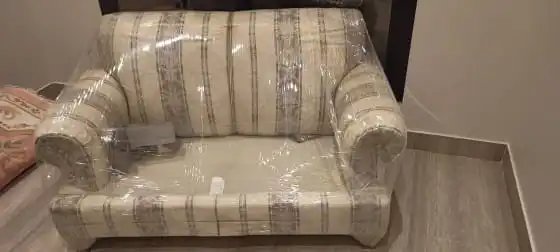

دينا نقل عفش بالرياض مع سائق وعمال
سيارات دينا مغلقة ومبطنة لنقل أثاث الشقق والمنازل والمكاتب داخل الرياض، مع سائق وعمال تحميل وتنزيل، وخيار إضافة الفك والتركيب والتغليف. نقدم معاينة مجانية وعرض سعر واضح قبل البدء.
متى تناسبك سيارة الدينا؟
تعد سيارة دينا لنقل العفش بالرياض الخيار العملي لنقل الشقق والمنازل المتوسطة والمكاتب الصغيرة، فهي تجمع بين حمولة جيدة وسهولة الحركة داخل الأحياء. وإذا كانت كمية الأثاث محدودة فقد يكفيك ونيت نقل عفش، أما إذا كانت أكبر فنختار معك السيارة الأنسب. تعرف أكثر على خدماتنا عبر شركة نقل عفش بالرياض مسار.
نقل غرفة أو غرفتين
مناسبة لنقل غرفة نوم رئيسية كاملة مع مجلس أو غرفة أطفال بجميع محتوياتها.
نقل أثاث شقة متوسطة
مناسبة في الغالب لمحتويات شقة من غرفتين أو ثلاث غرف وصالة، وقد تحتاج رحلة إضافية بحسب الكمية.
نقل قطع أثاث منفردة
مناسبة لنقل دواليب كبيرة أو أطقم كنب أو طاولات طعام، بحسب أبعاد القطعة.
نقل الأجهزة والكراتين
يتسع الصندوق للأجهزة الكهربائية والكراتين المعبأة بحسب حجم الحمولة.
الانتقال بين أحياء الرياض
تنقل الأثاث بين أحياء الرياض بحسب الموقعين والمسافة.
نقل مكتب صغير
نقل مكاتب العمل، الخزائن، والشاشات، ويمكنك مراجعة تفاصيل نقل المكاتب والشركات.
مزايا نقل الأثاث بالدينا
تتميز الدينا بعدة مزايا عند نقل الأثاث داخل الرياض:
الحمولة المناسبة
تناسب الدينا نقل أثاث الشقق المتوسطة والمكاتب الصغيرة في الغالب، وقد تحتاج الكميات الأكبر إلى رحلة إضافية أو سيارة أكبر، ونحدد ذلك معك قبل الاتفاق.
سهولة الحركة داخل الأحياء
تتحرك الدينا بسهولة نسبية داخل شوارع وأحياء الرياض مقارنة بالسيارات الأكبر، مما يسهّل الوصول إلى مداخل المباني.
الصندوق المغلق لحماية العفش
يحمي الصندوق المغلق والمبطن الأثاث والأجهزة من الغبار والشمس والأمطار أثناء الرحلة.
تكلفة مناسبة للحمولة المتوسطة
خيار مناسب للحمولة المتوسطة، فلا تدفع مقابل سيارة أكبر من حاجتك.
الدينا المغلقة والمبطنة لحماية الأثاث
نوفر دينات بصندوق مغلق ومبطن لحماية الأثاث أثناء النقل من الغبار والشمس والأمطار. يتم تثبيت القطع داخل الصندوق وترتيبها لتقليل الاحتكاك، ويمكن إضافة تغليف إضافي عند الحاجة.
حماية من الغبار والأتربة
صندوق مغلق يحمي الأثاث والمفروشات من الغبار أثناء الرحلة.
حماية من الشمس
يقلل تعرض الأخشاب والأجهزة لأشعة الشمس المباشرة.
حماية من الأمطار
يحمي الأثاث من الأمطار والرطوبة أثناء النقل.
ترتيب يقلل الاحتكاك
ترتيب القطع داخل الصندوق بطريقة تقلل الحركة والاحتكاك أثناء الرحلة.
ماذا تنقل الدينا؟
تنقل الدينا معظم مكونات المنزل والمكتب الصغير، ومن أبرز ما تنقله:
* تعتمد الحمولة على حجم وعدد القطع وترتيبها داخل صندوق السيارة.
مقارنة بين الونيت والدينا والسيارة الأكبر
تساعدك المقارنة التالية في اختيار المركبة الأكثر ملاءمة لحجم أغراضك دون هدر مالي:
| السيارة | الاستخدام الأنسب | الميزة الرئيسية | متى لا تكون مناسبة؟ |
|---|---|---|---|
| ونيت نقل عفش | قطع قليلة، غرفة مفردة، مشاوير خفيفة سريعة | خفة وسرعة وتكلفة اقتصادية | الحمولات المتوسطة والكبيرة |
| سيارة دينا | أثاث شقة متوسطة، غرفة أو أكثر، مكاتب صغيرة | مساحة جيدة وصندوق مغلق ومبطن | الكميات الكبيرة جداً في رحلة واحدة |
| سيارة أكبر أو أكثر من سيارة | الفلل والكميات الكبيرة | استيعاب كميات أكبر عبر أكثر من سيارة أو رحلة | النقل المحدود أو المتوسط الذي تكفيه سيارة واحدة |
متى تحتاج سيارة أكبر من الدينا أو أكثر من رحلة؟
خيارات الخدمة مع الدينا: سائق وعمال وفك وتغليف
نوفر في شركة مسار باقات مرنة تتيح لك اختيار مستوى المساعدة الذي تفضله، مع توضيح تكلفة كل خدمة قبل بدء العمل:
| الخيار | ماذا يشمل؟ | التكلفة | التفاصيل |
|---|---|---|---|
| دينا مع سائق | وصول في الموعد وقيادة آمنة ومعرفة بطرق الرياض | ضمن خدمة النقل الأساسية | يُحدد في العرض |
| دينا مع عمال | تحميل وتنزيل وترتيب الحمولة | تُوضح في عرض السعر | يُحدد في العرض |
| دينا مع فك وتركيب | فك غرف النوم والدواليب وترقيم القطع وحفظ المسامير وإعادة التركيب | حسب عدد القطع | فك وتركيب الأثاث ← |
| دينا مع تغليف | حماية الزوايا ببطانيات سميكة، بلاستيك فقاعي، نايلون استريتش، وتثبيت بالأحزمة | حسب الكمية والمواد | تغليف الأثاث ← ودليل مواد التغليف |
كيف نرتب الأثاث داخل الدينا؟
يتبع فريق مسار خطوات منظمة عند تحميل الأثاث لتقليل الحركة والاحتكاك أثناء الرحلة:
وضع القطع الثقيلة في الأسفل
توضع القواعد الثقيلة كالدواليب الكبيرة وقواعد الأسرة والأجهزة في أرضية الصندوق لتشكيل قاعدة صلبة تمنع الانقلاب.
حماية وعزل الأسطح
وضع بطانيات سميكة وفواصل كرتونية مقواة بين القطع الخشبية المتقابلة لمنع حدوث أي احتكاك أو كشط سطحي.
وضع القطع الحساسة في الأعلى
رص الشاشات والقطع الزجاجية والمرايا والإلكترونيات الخفيفة في الطبقات العلوية بعد تغليفها المزدوج بالفقاعات.
تثبيت الأثاث بالأحزمة
استخدام أحزمة شد قوية لمنع تحرك القطع أثناء السير.
استغلال المساحات البينية
ملء الفراغات بين القطع بالكراتين الصغيرة والوسائد لضمان عدم وجود مساحات فارغة تسمح بحركة المنقولات.
الفحص النهائي للثبات
التأكد من إحكام إغلاق أبواب الصندوق قبل انطلاق السيارة.
تكلفة نقل العفش بالدينا
يتحدد سعر الدينا حسب حجم الأثاث والمسافة بين الموقعين وعدد العمال والخدمات المطلوبة. تبدأ أسعار النقل لدينا من 250 ريال لنقل القطع المحدودة، ونقدم معاينة مجانية لتحديد سعر واضح قبل الاتفاق. اطلع على تفاصيل أسعار نقل العفش بالرياض.
العوامل التي تحدد التكلفة بدقة
- المسافة بين موقع التحميل والوجهة في الرياض أو خارجها.
- حجم الأثاث وعدد الغرف وتجهيزات الدينا المناسبة.
- عدد العمالة المطلوبة للتحميل والتنزيل.
- إضافة خدمات فنية كالنجارة والتغليف الواقي.
- رقم الدور وتوفر مصعد ملائم وسهولة وقوف السيارة.
احصل على عرض سعر واضح
أرسل لنا تفاصيل موقع التحميل والتسليم مع وصف أو صور للأثاث عبر واتساب، وسيقوم فريق مسار بتزويدك بعرض سعر تفصيلي يناسب حجم الأثاث.
كيف تحجز الدينا؟
تتم عملية الحجز لدى شركة مسار عبر أربع خطوات ميسرة وواضحة:
التواصل المباشر
اتصل بنا على 0539877874 أو تواصل عبر واتساب لتحديد موعد مبدئي.
تحديد التفاصيل والمعاينة
تزويدنا بالمواقع وحجم الأثاث، أو طلب معاينة مجانية لحصر المنقولات.
تحديد الخدمات الإضافية
اختيار رغبتك بتوفير عمال تحميل، فني فك وتركيب، أو مواد تغليف متخصصة.
التأكيد والتنفيذ
وصول السيارة المجهزة بالموعد المحدد وإتمام النقل والتركيب.
مناطق خدمة الدينا في الرياض
نقدم خدمة الدينا في أحياء الرياض، وفيما يلي أمثلة على الأحياء التي نخدمها:
وسط الرياض وباقي الأحياء
العليا، وتغطية باقي أحياء الرياض بالتنسيق المباشر.
تواصل معنا لتأكيد تغطية حيّك وترتيب وصول أقرب دينا متوفرة.
صور وتجهيزات
صور من أعمال النقل



أسئلة شائعة عن الدينا
احجز الدينا وسجّل معاينتك المجانية
تواصل معنا الآن لحجز دينا نقل عفش بالرياض، ونقدم لك معاينة مجانية وعرض سعر واضح.